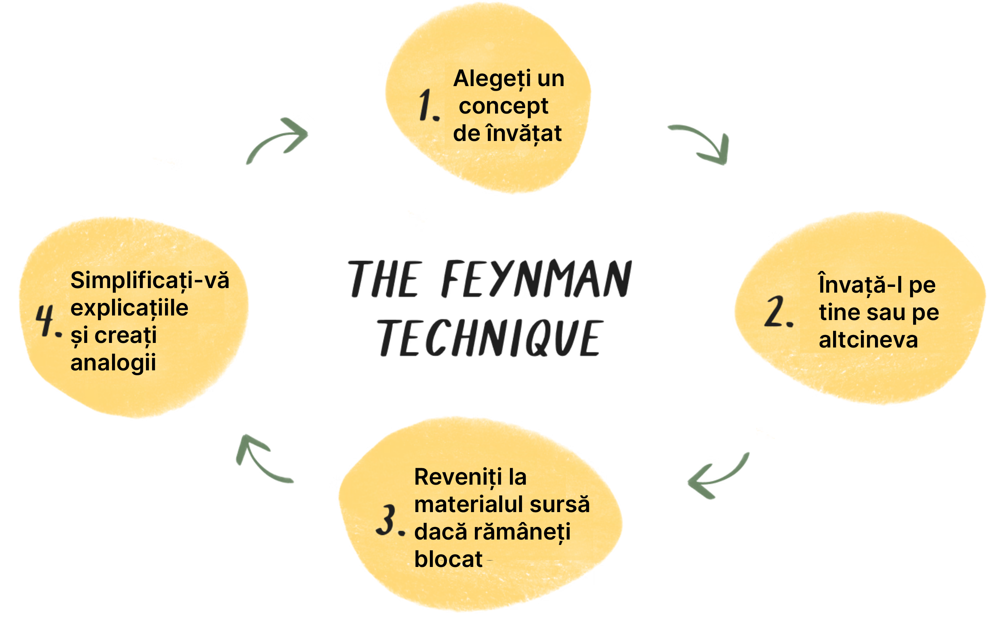
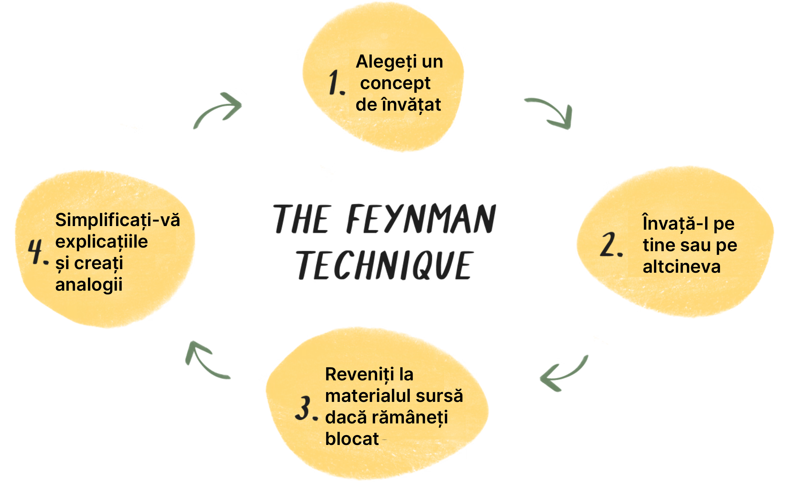

{% if latest_entry and latest_entry.title %} {{ latest_entry.title }} {% else %} {{writeTitle}} {% endif %}
{% if latest_entry and latest_entry.description %} {{ latest_entry.description | safe }} {% else %} {{writeDescription}} {% endif %}
{{explanation1}}
{% if user.language == 'en' %} {% else %}

{% endif %}
{% else %}

{% endif %}
{{explanation2}}
{{explanation3}}
{% if latest_entry and latest_entry.description %} {{ latest_entry.description | safe }} {% else %} {{writeDescription}} {% endif %}